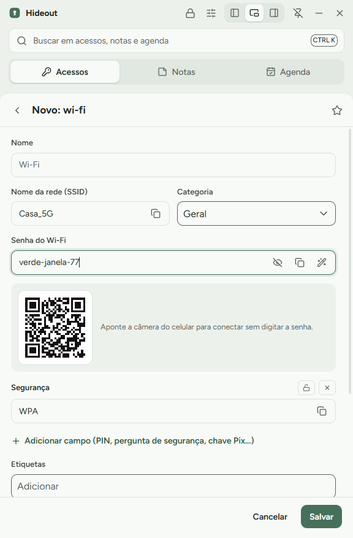
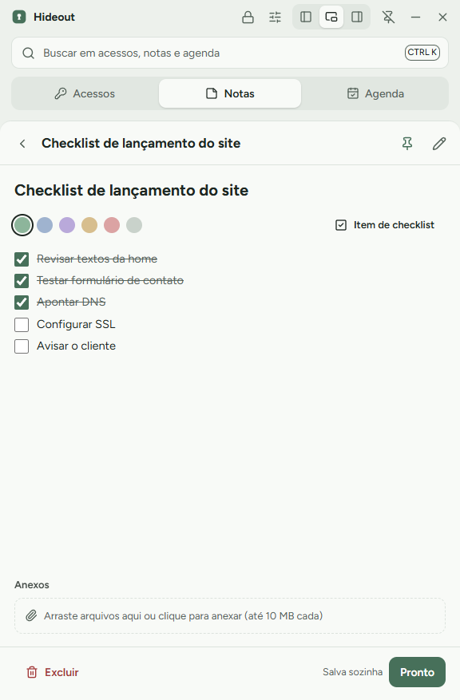
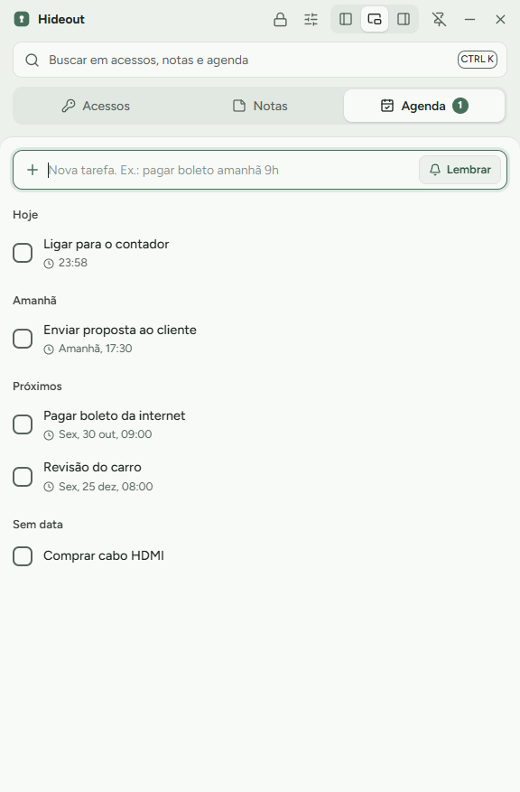
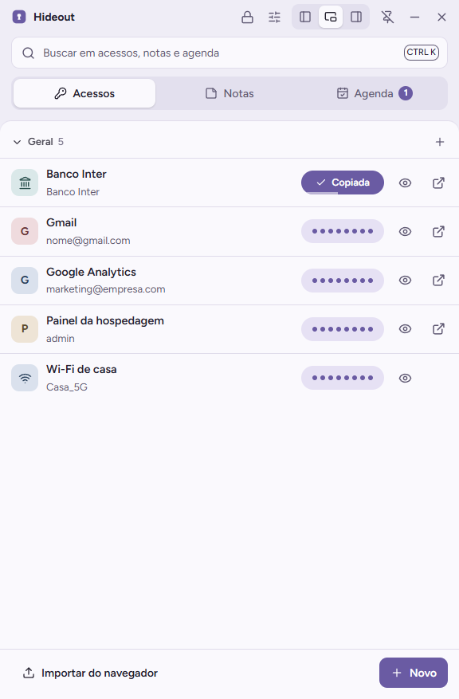
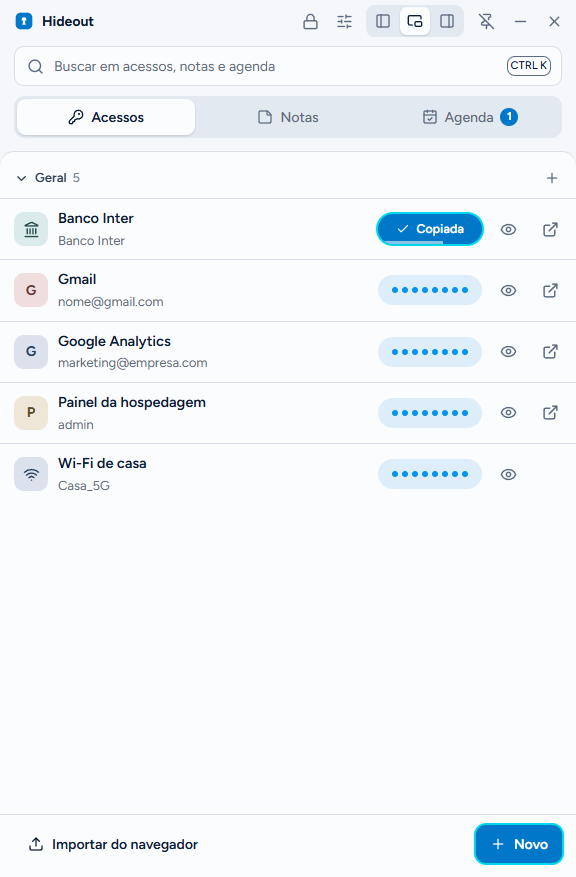
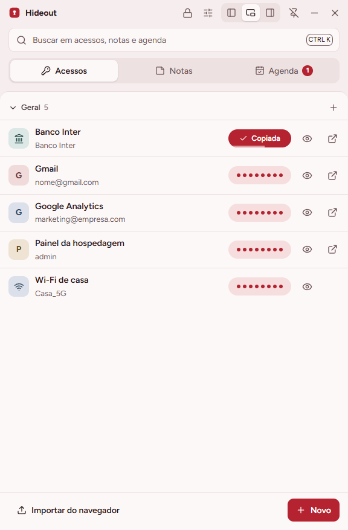
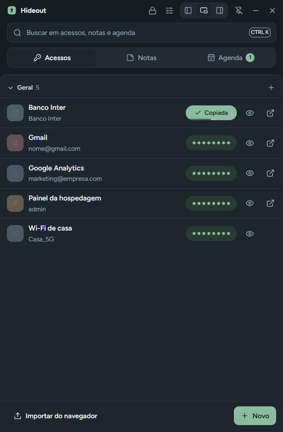
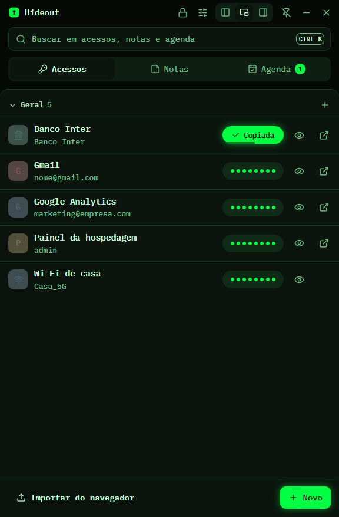

Suas senhas, notas e agenda num cofre que mora no canto da tela.
O Hideout ocupa 30% da largura, encaixa na esquerda ou na direita e copia qualquer senha com um clique. Tudo fica criptografado num único arquivo no seu OneDrive.
Grátis e de código aberto (MIT). Windows 10 e 11.

Clique na senha. Trinta segundos depois, ela some.
As senhas ficam ocultas como pontinhos. Um clique copia, e a barrinha mostra quanto tempo falta para o Hideout limpar a área de transferência. A senha copiada também não entra no histórico do Win+V nem na nuvem.
Experimente: clique nos pontinhos.
Acessos organizados por categoria
Sites, bancos, servidores e Wi-Fi, cada um com os campos certos.
- Modelos de acesso, cartão, Wi-Fi com QR Code, documento, conta bancária e servidor
- Gerador de senhas fortes e histórico das senhas antigas
- Importa as senhas salvas no Chrome, Edge ou Brave
- Anexos criptografados: PDFs e fotos de documentos, até 10 MB cada
- Clique no campo de login de qualquer site e aperte Ctrl Alt A: o Hideout digita usuário e senha

Notas com checklist
Escreva rápido no rodapé e aperte Enter. Comece a linha com - [ ] e ela vira um item para marcar. As notas salvam sozinhas.

Agenda que entende "amanhã 9h"
Uma tarefa sem data é só um item da lista. Escreva "pagar boleto sexta 10h" e ela vira lembrete, com notificação do Windows e botão para adiar 10 minutos, mesmo com o cofre trancado.

O que protege o seu cofre
Nada vai para servidor nenhum. O Hideout não tem conta online: o cofre é um arquivo seu.
Sem servidor, o 2FA protege a entrada pelo app em computadores novos. Contra alguém que tenha o arquivo e a sua senha, quem protege é a senha mestra forte. Use uma frase com quatro ou mais palavras.
Oito temas
Cinco suaves para o dia todo, dois com mais cor e um para quem gosta de terminal.





Comece em dois minutos
Baixe e instale
Rode o Hideout-Setup.exe. Se o Windows avisar, clique em Mais informações e depois em Executar assim mesmo.
Crie sua conta
Usuário e senha mestra. O cofre é criado na pasta Hideout-Dados do seu OneDrive.
Ative o 2FA
Escaneie o QR Code com o app autenticador do celular e digite o código.
Crie o PIN
Guarde o código de recuperação longe do computador. Pronto: no dia a dia, só o PIN.
Perguntas
Funciona em mais de um computador?
Sim. Instale o Hideout no outro PC, escolha a mesma pasta do OneDrive e entre com usuário, senha e o código 2FA. Se os dois PCs mudarem coisas ao mesmo tempo, o Hideout junta as alterações item por item.
Outras pessoas podem usar?
Sim. Cada pessoa cria a própria conta e tem o próprio arquivo de cofre. Na tela do PIN dá para trocar de usuário.
E se eu esquecer a senha mestra?
Use o código de recuperação de 24 caracteres que aparece no cadastro. Sem a senha e sem o código, ninguém consegue abrir o cofre, nem você.
Por que o Windows avisa ao instalar?
O instalador ainda não tem assinatura digital paga. O código é aberto: você pode conferir tudo neste repositório ou compilar você mesmo com npm run dist.
O Hideout envia algum dado pela internet?
Não. Ele não tem servidor, não faz telemetria e não busca ícones de sites. A única coisa que sai do computador é o próprio arquivo criptografado, pela sincronização do OneDrive.